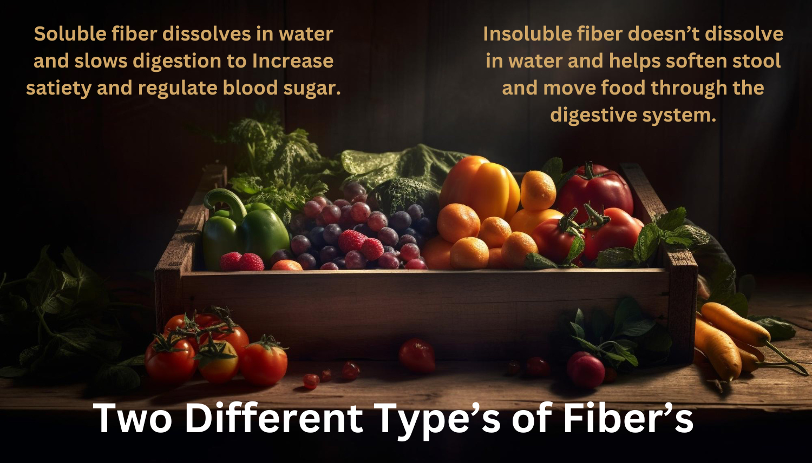

Fiber Rich Foods

A variety of childhood health problems have been linked to low fiber consumption,
including type 2 diabetes, obesity, and constipation. A high fiber diet may help, but it
is important to note the differences between soluble and insoluble fiber in order to use
them to your child’s advantage.
The slow passage of soluble fiber through the digestive system allows more time for food
to be absorbed. This makes you feel fuller and prevents overeating. Soluble fiber helps
to lower cholesterol and maintain steady blood sugar as well.
Fiber Dietary Requirements
| Gender/Age |
Fiber(grams) |
| 1-3 years |
19 |
| 4-8 years |
25 |
| 9-13 years Female |
26 |
| 9-13 years Male |
31 |
| 14-18 years Female |
29 |
| 14-18 years Male |
38 |
Foods with fiber
| Fruits |
Serving Size |
Total Fiber(grams) |
| Raspberries |
1 cup |
8.0 |
| Pear |
1 medium |
5.5 |
| Apple |
1 medium |
4.4 |
| Banana |
1 medium |
3.1 |
| Figs, dried |
2 medium |
1.6 |
| Raisins |
1 ounce (60 raisins) |
1.0 |
| Vegetables |
Serving Size |
Total Fiber(grams) |
| Artichoke, cooked |
1 medium |
10.3 |
| Sweet corn, cooked |
1 cup |
4.0 |
| Potato, with skin, baked |
1 small |
3.0 |
| Tomato paste |
1/4 cup |
2.7 |
| Carrot, raw |
1 medium |
1.7 |
| Green peas, cooked |
1 cup |
8.8 |
| Legumes,nuts and seeds |
Serving Size |
Total Fiber(grams) |
| Split peas, cooked |
1 cup |
16.3 |
| Black beans, cooked |
1 cup |
15.0 |
|
Lentils, cooked |
1 cup |
15.6 |
| Baked beans, cooked |
1 cup |
10.4 |
| Almonds |
1 ounce(23 nuts) |
3.5 |
| Pistachio nuts |
1 ounce (49 nuts) |
2.9 |
| Grains, cereal and pasta |
Serving Size |
Total Fiber(grams) |
| Spaghetti, whole-wheat, cooked |
1 cup |
6.3 |
| Oat bran muffin |
1 medium |
5.2 |
| Oatmeal, instant, cooked |
1 cup |
4.0 |
| Popcorn, air-popped |
3 cups |
3.5 |
| Brown rice, cooked |
1 cup |
3.5 |
| Bread, whole-wheat or multigrain |
1 slice |
1.9 |